מקורות התמונות
התמונות נלקחו מוויקישיתוף. הן הוקטנו והומרו לפורמט WebP כדי שיופיעו במהירות בכל מכשיר. שמות היוצרים, הקישורים והרישיונות מופיעים ליד כל תמונה.
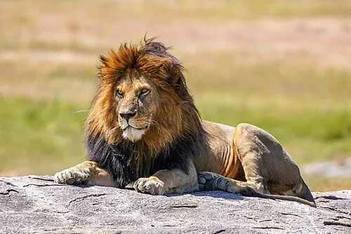
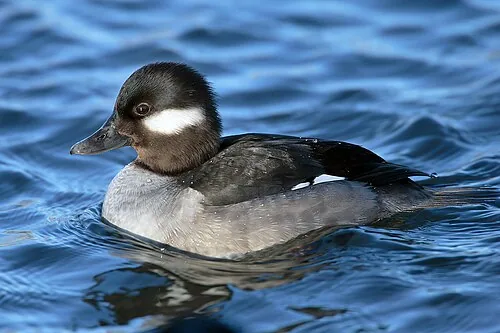
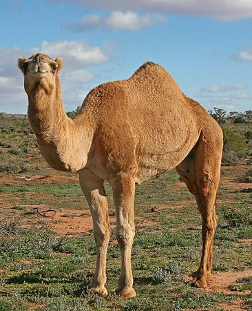
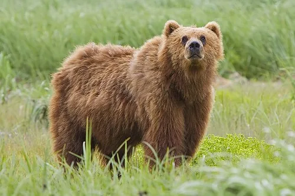
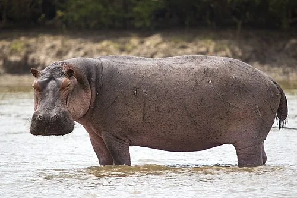
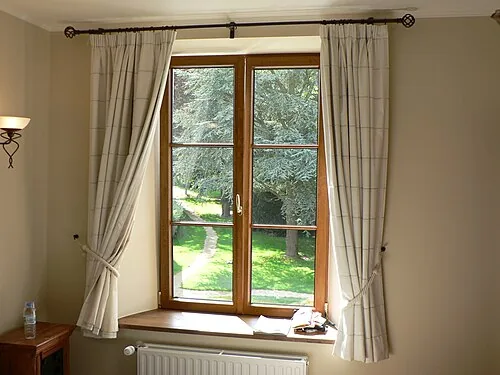
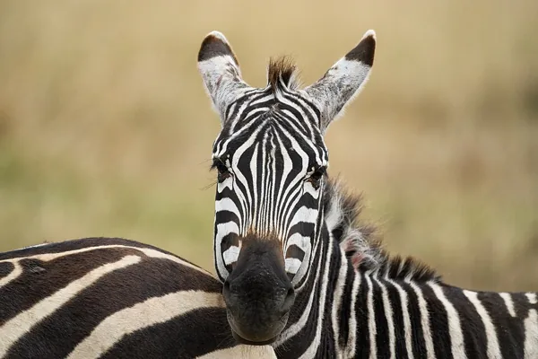
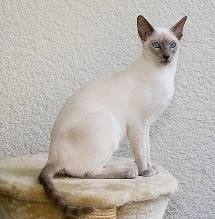
חתוליוצר: Karin Langner-Bahmann (הועלה בידי Martin Bahmann)
רישיון: CC BY-SA 3.0
קובץ המקור בוויקישיתוף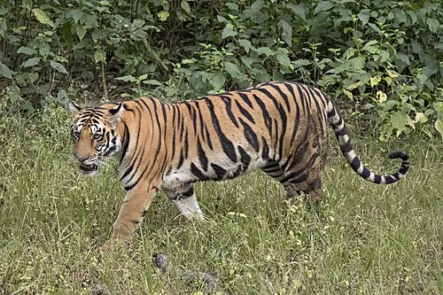
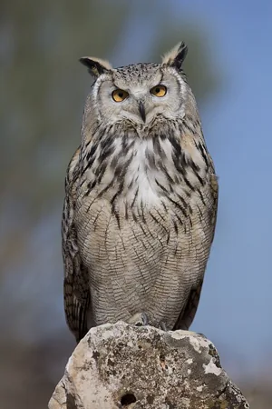
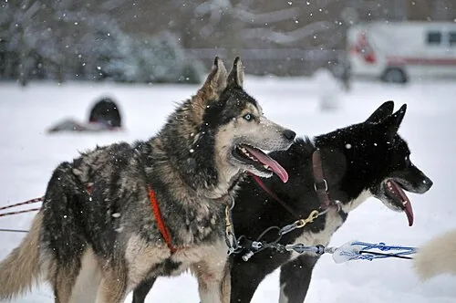
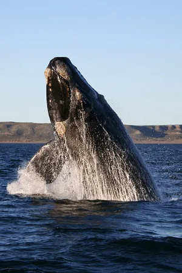
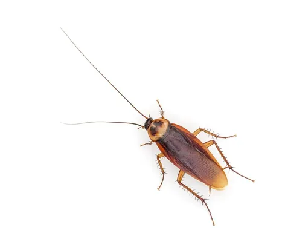
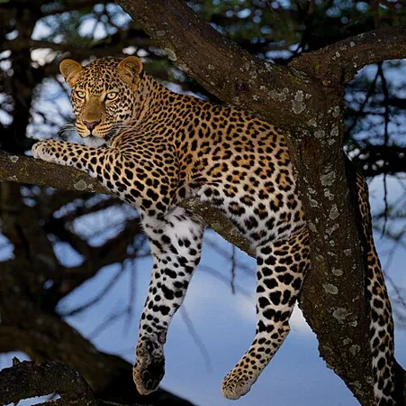
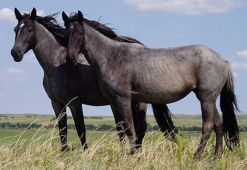
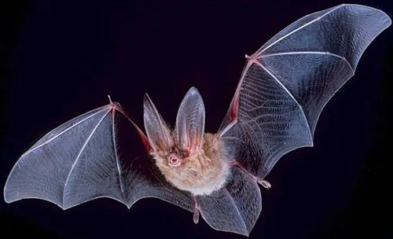
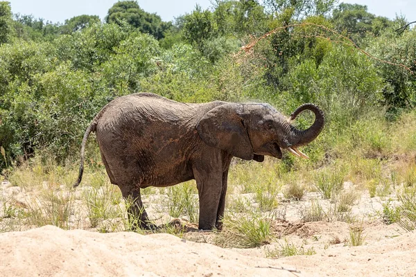
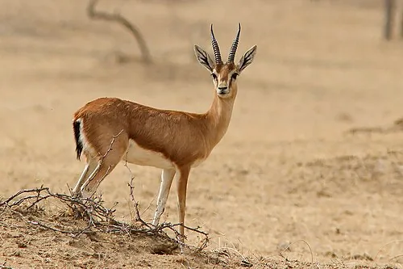
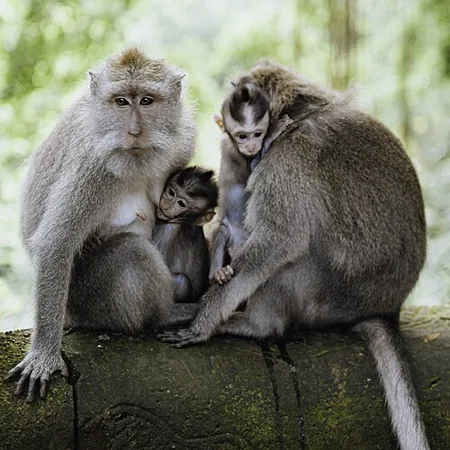
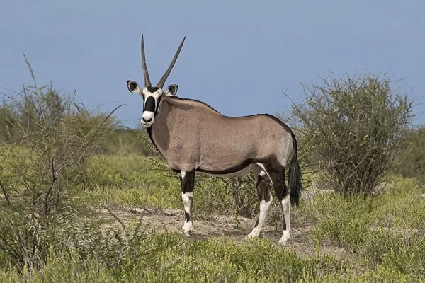
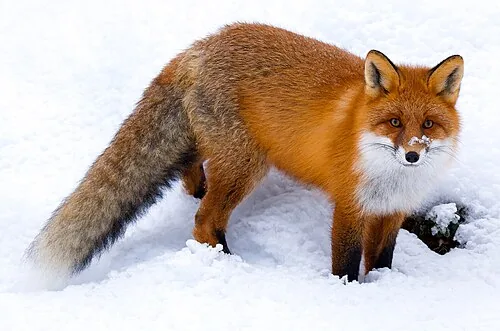
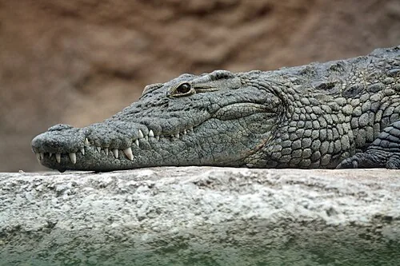